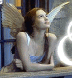

 TO BE WITH YOU - Max Ehrmann
To be with you this evening,
rarest of the evenings all,
And listen to the whispering leaves
and to the night bird's call
The silvery moonlight on your face --
To be with you in some still place.
'
To be with you somewhere within
this evening's mystic shade,
To hear your plans and hopes
and tell you mine, all unafraid
That you'd forget to hold them dear,
When I'm away and you're not here.
'
To be somewhere alone with you
and watch the myriad stars,
Far golden worlds beyond the noisy
earth's unkindly jars.
As quietly they sail night's sea
Above the world and you and me.